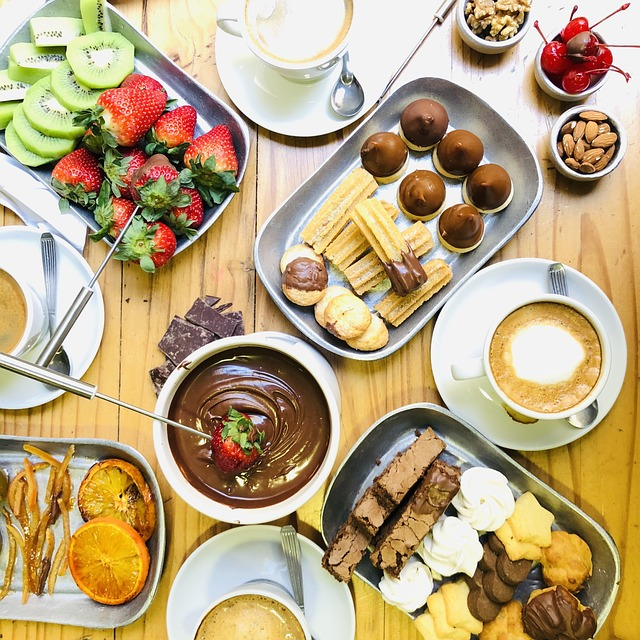

Chocolate Fondue

Ingredients
- 1 cup (8 ounces) heavy cream
- Pinch salt
- 12 ounces milk or dark chocolate (chips or roughly chopped bar)
Method:
- Heat the cream:
Heat the cream with a pinch of salt over medium heat in a small saucepan until tiny bubbles show and begins to lightly and slowly simmer.
- Remove from heat and add the chocolate:
Remove from heat, add the chocolate, and whisk until smooth and fully incorporated.
- Serve immediately:
Transfer the chocolate mix to a fondue pot heated at low or with a low flame, or serve straight from the pot.
Arrange the dip-ables on a platter or plates around the chocolate pot.
Use a fondue fork, bamboo skewer, seafood fork, or a salad fork to dip the fruit pieces and other dip-ables into the hot melted chocolate mixture. Eat immediately.
If the fondue begins to feel a little stiff, add a tablespoon of heavy cream and stir. It will help it go a little longer. Eventually, it will cook down though, and you may need to start a new pot.